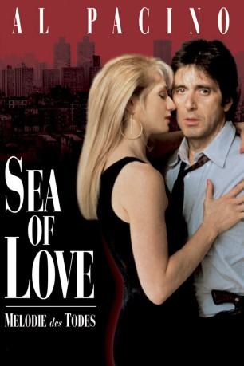

#2004 Sea of Love - Melodie des Todes
Alternativ: Sea of Love
 
 IMDB-Wertung: 6.8 / 10
IMDB-Wertung: 6.8 / 10  Metascore: 66
Metascore: 66 
US-amerikanischer Thriller aus dem Jahr 1989 mit Al Pacino und Ellen Barkin in den Hauptrollen. Bei den Ermittlungen im Fall eines Serienkillers, der seine Opfer über Kontaktanzeigen anlockt, verliebt sich der New Yorker Cop Frank Keller in die Hauptverdächtige.
Jahr: 1989
Dauer: 113 Minuten
FSK: 16
Land: USA Studio: Universal PicturesTonspuren: DTS - ,
Untertitel: Deutsch,
Auflösung: 1080p (1920x1040) Größe: 6860 MB
Genre: Thriller, Drama, Krimi, Mystery
Regisseur: Harold Becker
Drehbuch: Richard Price
Soundtrack: Trevor Jones
Darsteller:
 Al Pacino als Det. Frank Keller
Al Pacino als Det. Frank Keller Ellen Barkin als Helen Cruger
Ellen Barkin als Helen Cruger John Goodman als Det. Sherman
John Goodman als Det. Sherman Michael Rooker als Terry
Michael Rooker als Terry William Hickey als Frank Keller Sr.
William Hickey als Frank Keller Sr. Richard Jenkins als Gruber
Richard Jenkins als Gruber Paul Calderon als Serafino
Paul Calderon als Serafino Gene Canfield als Struk
Gene Canfield als Struk Larry Joshua als Dargan
Larry Joshua als Dargan John Spencer als Lieutenant
John Spencer als Lieutenant- Christine Estabrook als Gina Gallagher / Lonelyheart
- Patricia Barry als Older Woman
 Mark Phelan als Murdered Man
Mark Phelan als Murdered Man Michael O'Neill als Raymond Brown
Michael O'Neill als Raymond Brown Luis Antonio Ramos als Omar Maldonado
Luis Antonio Ramos als Omar Maldonado Samuel L. Jackson als Black Guy
Samuel L. Jackson als Black Guy Damien Leake als Ernest Lee
Damien Leake als Ernest Lee- John Thaddeus als Tommy
- Joshua Nelson als Willie
- Fred Sanders als Cable Supervisor
- Manny Alfaro als Doorman
 Brian Paul als James Mackey
Brian Paul als James Mackey- Jackie Laidlaw als Yuppie Detective #1
- Paul Hubbard als Yuppe Detective #2
 James Kidnie als Surveillance Team Member
James Kidnie als Surveillance Team Member John Bourgeois als Young Cop
John Bourgeois als Young Cop- Hugh Thompson als Young Cop
- Miranda de Pencier als Bride
- Ty Templeton als Groom
- Barry Godin als Police Officer , uncredited
 David Hummel als Businessman , uncredited
David Hummel als Businessman , uncredited Christopher Maleki als Detective , uncredited
Christopher Maleki als Detective , uncredited- Ángel Ramírez als Detective , uncredited
- Barbara Baxley als Miss Allen
- Michael Fischetti als Doorman
- Rafael Báez als Efram Maldonado
- Zachary Michael Simmons als Ernest's Son
- Christofer de Oni als Supermarket Manager
- Dwayne McClary als Supermarket Cashier
- Jacqueline Brookes als Helen's Mother
- Thom Curley als Toastmaster
- Larry Mullane als Clipboard Guy #2
- Anthony Calanese als Clipboard Guy #3
 Thomas Wagner als Pete, Bartender
Thomas Wagner als Pete, Bartender- Deborah Taylor als Tense Woman
- Ferne Downey als Sasha
- Gerald Lenton als Murdered Man
- Nancy Beatty als Raymond Brown's Wife
- Arun Greenaway als Raymond Brown's Kid
- Nicolina Greenaway als Raymond Brown's Kid
Datei: X:\1989\Sea of Love - Melodie des Todes (1989, FSK16, 1920x1040).mkv seit 22.09.2015
Festplatte: HD 1987-1991
 Es gibt insgesamt 54 Filme in der Gruppe '1989'
Es gibt insgesamt 54 Filme in der Gruppe '1989'